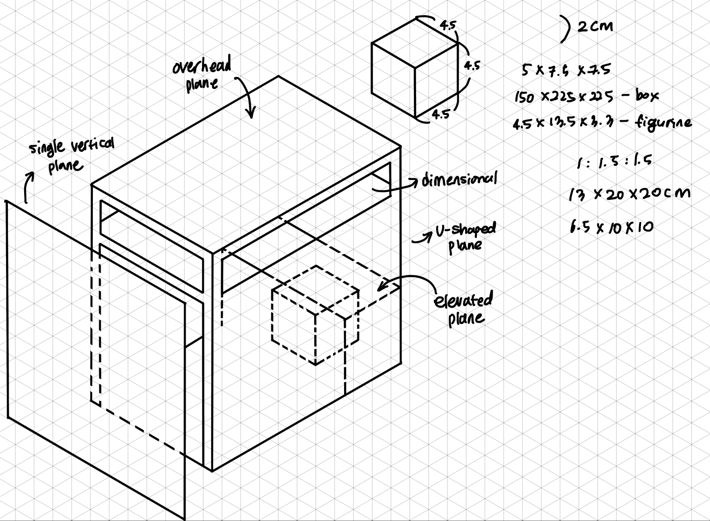
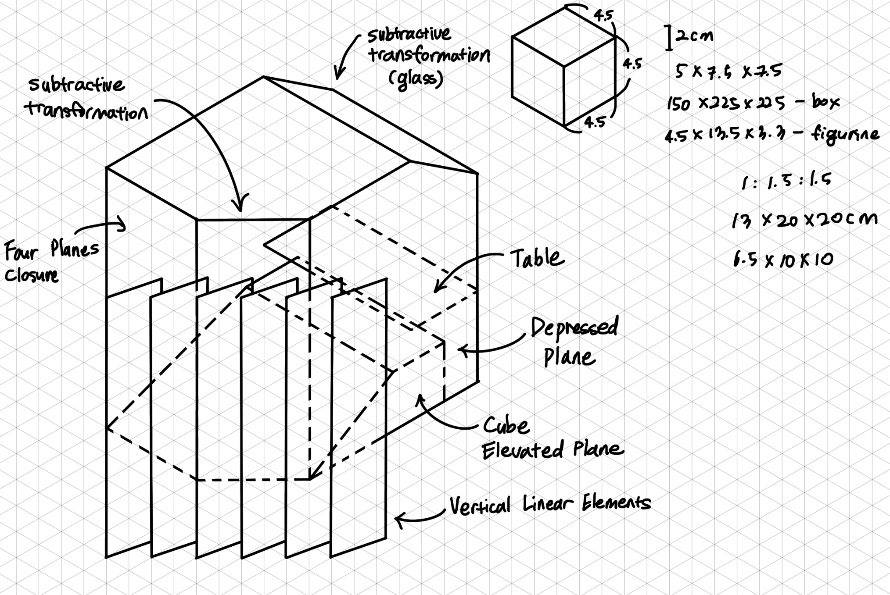
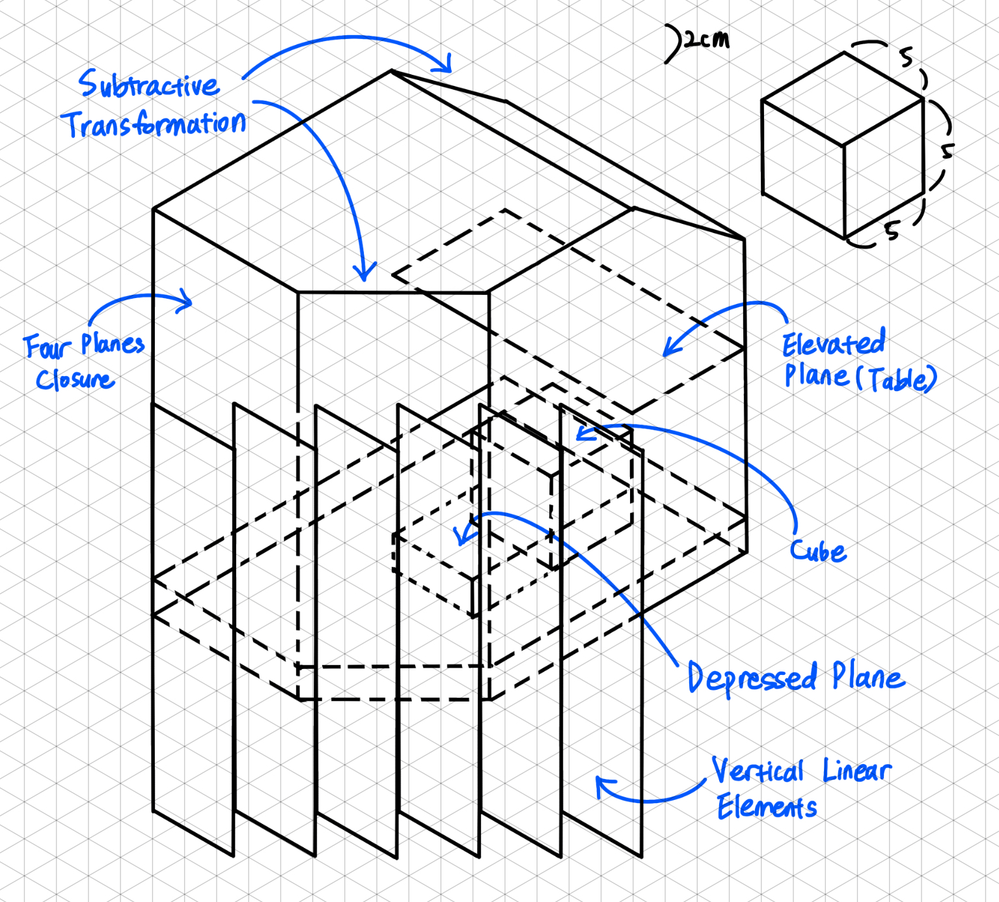

Study Room

Study Room
I have designed a study booth that could fit in an indoor plaza. I used Rhino to create the model and created the prototype using cardboard. As I work on the ideation, I considered the human factors and ergonomics of the end-users, which were students who may carry their backpacks or things that may be large in volumes.
The indoor Study Booth project was done as an assignment in the Spatial Design course. Human factors, dimensions, and ergonomics were important factors to consider. In the initial iteration process, I drew the ideation sketches that had less consideration for human factors or ergonomics. However, as I iterated throughout the process and prototyping, I found some issues in terms of human dimensions and user experience.
I got feedback from the instructor and classmates, and simulating the walkway using a figurine helped me to imagine and put myself in a process of usign the study booth. For example, I had non-adjustable seat and no ramp to allow a more diverse spectrum of users. After the feedback, I improved to adopt the human factors and dimensions and installed the ramp and made the entrance widen.
To start the project, I started sketching the ideations following the given dimensions. As you can see in Figure 1, it was too basic and the single panel was too close to the booth and the human factors were not considered well.
To give the spacing more interesting dynamics and have more circulation in the design, I added multiple panels that work as a partition (Figure 2). However, as in-class feedback, the ramp inside the booth was making it inconvenient to enter and it was not adjustable for different users.
Thus, as Figure 3 displays, I made the chair foldable so that it is more desirable for any kind of user such as users on wheelchairs or users who want to stand up while using the table. The chair became more adaptable to users, but as I built the first iteration of the prototype using cardboard, it was difficult to install the partition with multiple vertical panels and the entrance was not large enough to fit the users with wheelchairs. Also, in terms of unity, it looked not consistent with the booth as a major element of this project.

Based on the feedback that I got, as a final iteration (Figure 4), I redesigned the partition in a way that it could still keep the user’s privacy safe, but allow more lighting inside and let people outside of the box be able to know if there is a person inside or not. Also, most importantly, I added a ramp at the entrance so that users with wheelchairs have access to the inside of the booth.


Figure 5 describes the cardboard physical model that was scaled down to fit a given figurine and Figure 6 shows the figurine sitting inside the booth.